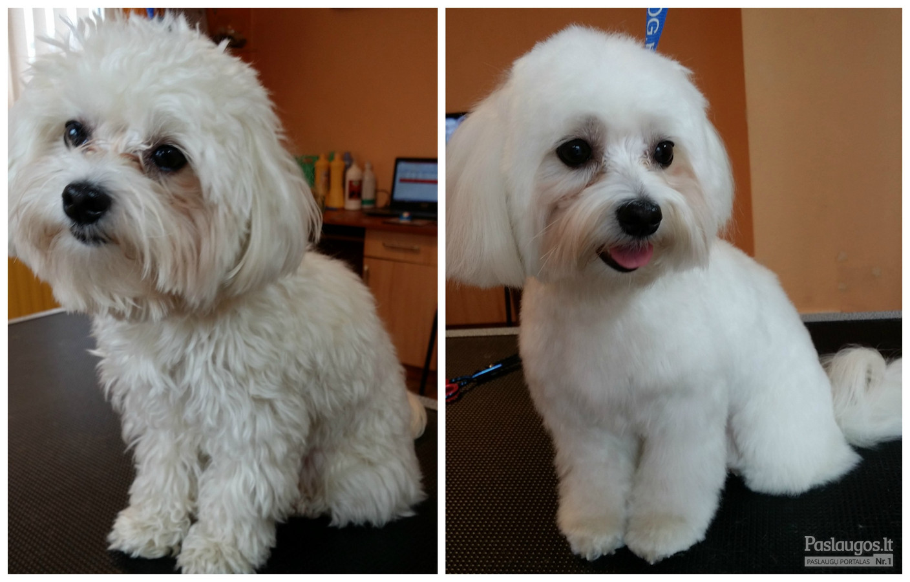

Vaikų Kirpimas - Vaikų Kirpykla Vilniuje (PC Ozas) | DandySalon.lt
Vaikų kirpykla
Home Vaikų kirpyklaMažiesiems lankytojams DANDY salone yra sukurta speciali žaisminga zona, į kurią kiekvienas mažylis norėtų ateiti.
Vaikučiams kirpti yra specialiai tam paruoštos kėdutės, rodomi mažųjų pamėgti animaciniai filmukai, o visada puikiai nusiteikusios DANDY salono meistrės pasistengs su jūsų mažyliu surasti bendrą kalbą ir jį madingai apkirpti bei sušukuoti.
PO ŽAISMINGO KIRPIMO MAŽŲJŲ KLIENTŲ VISADA LAUKIA MALONI STAIGMENĖLĖ !!!
KVIEČIAME APSILANKYTI !!!
Vaikiško kirpimo kaina 15 EUR 🙂
Užsirašykite kirpimui telefonu: +37063577779
Arba užsiregistruokite mūsų sistemoje
Užsirašykite kirpimuiVaikiškų kirpimų kainoraštis
Vaikiškas kirpimas 15 € Vaikiškas kirpimas su raštų skutinėjimu 15 € Kirpčiukai 5 € Mergaitiška proginė šukuosena 15-25 € Berniukiškas sušukavimas 8 € Galvos plovimas 3 €Mūsų darbų galerija
+ + + + + + + + + + + + + +DANDY SALON rasite PC OZAS 1 aukšte prie pat įėjimo į daugiaaukštę (1A) stovėjimo aikštelę.
Kviečiame užsirašyti iš anksto !!!
Tel: +37063577779
DANDY salonas - laukia Jūsų su visa šeima !!!
UAB "Grožio grupė" ©2018 Puslapio turinį kopijuoti draudžiama
Svetainė naudoja slapukus - būtinus svetainės veikimui. Paspaudę „sutinku ir uždaryti“ arba toliau tęsdami naršymą svetainėje Jūs sutinkate su slapukų naudojimu. SUTINKU ir UŽDARYTI Plačiau apie slapukus